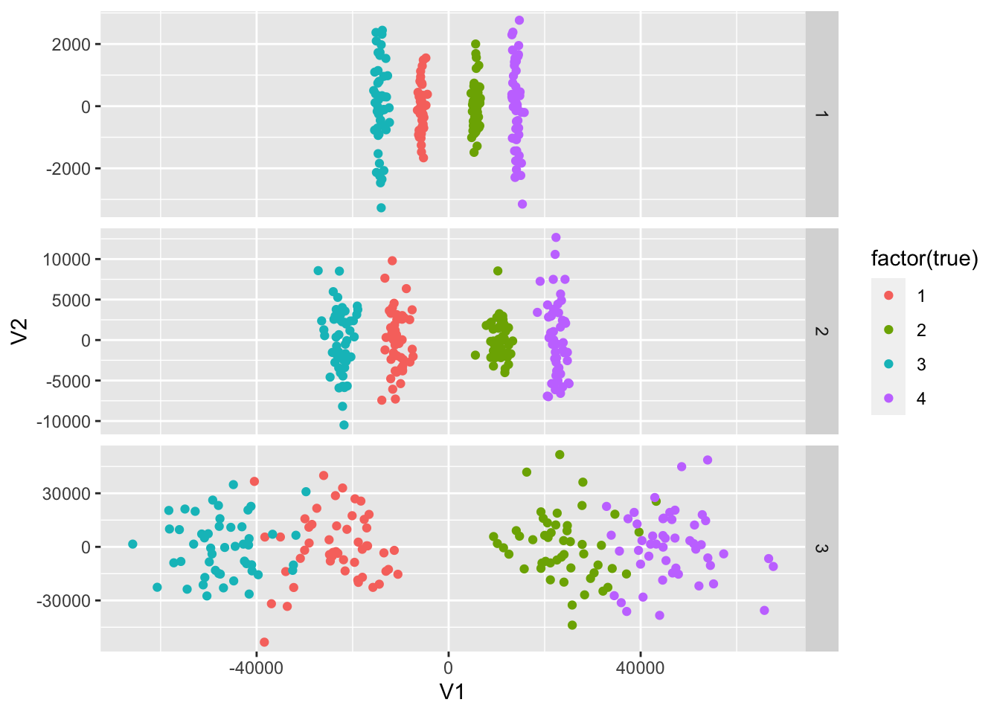

Problem Intro and simulation setting
yuqimiao
2020-09-08
Last updated: 2020-12-29
Checks: 7 0
Knit directory: multiomics-SIMLR/
This reproducible R Markdown analysis was created with workflowr (version 1.6.2). The Checks tab describes the reproducibility checks that were applied when the results were created. The Past versions tab lists the development history.
Great! Since the R Markdown file has been committed to the Git repository, you know the exact version of the code that produced these results.
Great job! The global environment was empty. Objects defined in the global environment can affect the analysis in your R Markdown file in unknown ways. For reproduciblity it’s best to always run the code in an empty environment.
The command set.seed(20200830) was run prior to running the code in the R Markdown file. Setting a seed ensures that any results that rely on randomness, e.g. subsampling or permutations, are reproducible.
Great job! Recording the operating system, R version, and package versions is critical for reproducibility.
Nice! There were no cached chunks for this analysis, so you can be confident that you successfully produced the results during this run.
Great job! Using relative paths to the files within your workflowr project makes it easier to run your code on other machines.
Great! You are using Git for version control. Tracking code development and connecting the code version to the results is critical for reproducibility.
The results in this page were generated with repository version 7bea59c. See the Past versions tab to see a history of the changes made to the R Markdown and HTML files.
Note that you need to be careful to ensure that all relevant files for the analysis have been committed to Git prior to generating the results (you can use wflow_publish or wflow_git_commit). workflowr only checks the R Markdown file, but you know if there are other scripts or data files that it depends on. Below is the status of the Git repository when the results were generated:
Ignored files:
Ignored: .DS_Store
Ignored: .Rhistory
Ignored: .Rproj.user/
Ignored: analysis/.DS_Store
Ignored: code/.DS_Store
Ignored: code/R/.DS_Store
Ignored: code/functions/.DS_Store
Ignored: code/functions/.Rhistory
Ignored: data/.DS_Store
Untracked files:
Untracked: SIMLR-tracking.md
Untracked: analysis/derivation_of_weights.jpeg
Untracked: analysis/gl_simlr_micro.Rmd
Untracked: code/MKerW-A/
Untracked: code/bck_scripts/
Untracked: code/cluster_functions/
Untracked: code/functions/Changing_rho.R
Untracked: code/functions/Code_5term_opt-copy.R
Untracked: code/functions/Code_5term_opt.R
Untracked: code/functions/SIMLR_no_weights.R
Untracked: code/functions/dist_kernels.R
Untracked: code/functions/gl_simlr.R
Untracked: code/functions/gl_simlr2.0.R
Untracked: code/functions/kernel_validation.R
Untracked: code/functions/microb_compare.R
Untracked: code/functions/simulation_function1.0.R
Untracked: code/functions/simulation_tidy.R
Untracked: code/functions/tmp.R
Untracked: code/microb_apply/
Untracked: code/simulation_1224.R
Untracked: code/simulation_1229.R
Untracked: code/simulation_compare2.R
Untracked: code/simulation_compare3.R
Untracked: code/simulation_compare_size.R
Untracked: data/balance_24_table.Rdata
Untracked: data/configuration_data_40.Rdata
Untracked: data/eff37_24_table.Rdata
Untracked: data/example_data/
Untracked: data/micro_case_pool.Rdata
Untracked: data/micro_case_pool_2.Rdata
Untracked: data/simu_1215/
Untracked: data/simu_1220/
Untracked: data/simu_1229/
Untracked: data/simu_all/
Untracked: data/simulation_2data/
Untracked: data/simulation_data_var10_s4/
Untracked: data/simulation_data_var20_s4/
Untracked: data/simulation_gl/
Untracked: data/simulation_gl_1/
Untracked: data/simulation_microgl/
Untracked: data/simulation_microgl_1/
Untracked: data/simulation_normalization/
Untracked: data/simulation_rho/
Untracked: data/simulation_var10_50/
Untracked: data/simulation_var5_50/
Untracked: data/table_balance_3d3g.Rdata
Untracked: gl-simlr_old_analysis.Rmd
Untracked: micro_abd.Rdata
Untracked: micro_abd_preabs.Rdata
Untracked: micro_case_pool2.Rdata
Untracked: microb_multisim.Rdata
Untracked: new_micro.jpeg
Untracked: parameter_separation/
Untracked: sub111_eff55_u20.rds
Untracked: tsne/
Unstaged changes:
Deleted: analysis/sim_report.rmd
Modified: code/R/utils.simlr.R
Deleted: code/functions/SNF_init_generater.R
Deleted: code/functions/kernel_buiding_functions.R
Deleted: code/functions/multiple.kernel.verify.R
Modified: code/functions/simulation_function.R
Modified: code/functions/simulation_verify.R
Note that any generated files, e.g. HTML, png, CSS, etc., are not included in this status report because it is ok for generated content to have uncommitted changes.
These are the previous versions of the repository in which changes were made to the R Markdown (analysis/trivial_analysis.rmd) and HTML (docs/trivial_analysis.html) files. If you’ve configured a remote Git repository (see ?wflow_git_remote), click on the hyperlinks in the table below to view the files as they were in that past version.
| File | Version | Author | Date | Message |
|---|---|---|---|---|
| Rmd | 7bea59c | yuqimiao | 2020-12-29 | wflow_publish(files = c(“analysis/GL_SIMLR.rmd”, “analysis/trivial_analysis.rmd”)) |
| html | d459d2b | yuqimiao | 2020-09-23 | Build site. |
| Rmd | 449a753 | yuqimiao | 2020-09-23 | update with new analysis |
| html | 04bea8d | yuqimiao | 2020-09-09 | Build site. |
| Rmd | 43057b6 | yuqimiao | 2020-09-09 | change small index |
| html | a03de39 | yuqimiao | 2020-09-09 | Build site. |
| Rmd | 1179a63 | yuqimiao | 2020-09-09 | simulation describe and basic operation for a data in trivial analysis |
library(SNFtool)
library(rlist)
library(tidyverse)── Attaching packages ────────────────────────────── tidyverse 1.3.0 ──✓ ggplot2 3.3.0 ✓ purrr 0.3.3
✓ tibble 3.0.0 ✓ dplyr 0.8.5
✓ tidyr 1.0.2 ✓ stringr 1.4.0
✓ readr 1.3.1 ✓ forcats 0.5.0── Conflicts ───────────────────────────────── tidyverse_conflicts() ──
x dplyr::filter() masks stats::filter()
x dplyr::lag() masks stats::lag()library(abSNF)
Attaching package: 'abSNF'The following objects are masked from 'package:SNFtool':
affinityMatrix, dist2, SNF, spectralClustering,
standardNormalizationlibrary(SIMLR)
library(parallel)
library(Matrix)
Attaching package: 'Matrix'The following objects are masked from 'package:tidyr':
expand, pack, unpacksource("./code/R/compute.multiple.kernel.R")
source("./code/functions/simulation_function.R")Goal of study
We want to find a data integration method which can accurately identify the subtypes embeded in multi-omics data of patients.
Problems want to solve in this method
- Find the structure of different omics data, and compare similarity/difference;
- Integrate complementary information from multi-omics data to capture as much as subtype information as possible;
- Avoid influence from noise features.
simulation logic
Mechanism and characteristics parameters
The goal of simulation is to embed differences in the signal features of different subtypes. Although for the same set of samples, they could imply different cluster information, and the difference can be shown from the effective size, the noise-to-signal ratio, the cluster type seperation and the feature distribution type.
Here we have 2 different settings to imply 2 scenarios:
Assuming 200 samples in 4 different subtypes, overall 4 data types. Every data type has 1000 features, with different noise-signal ratio and feature variance. The signal features are coming from different distributions with different parameters for different subtypes, which is the mechanism to generate subtype difference.
More specifically, let’s assume the first data type (n = 200 * p = 1000) can separate 4 subtypes with balanced subtype ratio(50 subjects per subtype). The first 50 features are the signals which actually effective in subtype separation. For the first subtype, the 50 feature signal are generated from \(N(\mu_1, \sigma^2)\), the second subtype, \(N(\mu_2, \sigma^2)\) and so on, thus, the difference between \(\mu_i\) and the size of \(\sigma\) will influence the degree of separation of 4 subtypes. Also, not all features would follow a normal distribution. For example, beta measurement of methylation rates for a CpG sites could follow a beta distrbution.
[NEW] Information possession setting
Besides the subtype ratio, \(\mu_i\) and \(\sigma\) and distribution type, there is another factor could influence the result of integration. Different data types could include different separation information. For example, subtype A and B have analygous gene expression profile, and subtype C and D also have analygous gene expression profile, but the subtype combinations A&B and C&D may have different gene expression profile. In this setting, using gene expression data only, we can separate A&B and C&D as 2 subtypes. Similarly, methylation data can separate A&C and B&D as 2 subtypes. In this setting, if we can properly integrate these 2 data types, we can have 4 subtype groups.But there are many possibilities for the information possession setting for each data type. Here we only consider 2 easy scenario.
- different types of data imply same cluster information
Here we assume all data types reflect same clustering information, which means all data types can separate 4 different subtypes with similar clustering analogy. We can assume for data type m, the signal features for 4 subtypes comes from \(N(\mu_{im}, \sigma^2), i = 1,2,3,4\) separately. We set the parameter: \(\{\mu_{im}\} = \{-\mu_m,\mu_m,-2\mu_m,2\mu_m\}\)
source("./code/functions/simulation_function.R")
sim1 = simulation_3(data_divide = rep("1/2/3/4",3),sigma = c(5,20,100))
mds_list = lapply(sim1[1:3], function(x){
dist = dist2(x,x)
mds = cmdscale(dist,2)
return(mds)
})Warning in if (is.na(c)) {: the condition has length > 1 and only the first
element will be used
Warning in if (is.na(c)) {: the condition has length > 1 and only the first
element will be used
Warning in if (is.na(c)) {: the condition has length > 1 and only the first
element will be usedg_sim1 = as_tibble(list.rbind(mds_list)) %>%
mutate(data_type = rep(c(1,2,3), each = 200),
true = rep(sim1$truelabel, 3)) %>%
ggplot(aes(x = V1, y = V2, color = factor(true)))+
geom_point()+
facet_grid(data_type~., scale = "free")Warning: The `x` argument of `as_tibble.matrix()` must have column names if `.name_repair` is omitted as of tibble 2.0.0.
Using compatibility `.name_repair`.
This warning is displayed once every 8 hours.
Call `lifecycle::last_warnings()` to see where this warning was generated.g_sim1
Note that in this setting, the distance between 4 clusters are different. Denoting distance between cluster 1 and 2 as \(d_{12}'\), then we have \(d_{12}'=d_{13}' = d_{24}'<d_{14}' = d_{23}'<d_{34}'\)
- different types of data imply different cluster information
As mentioned above, in this setting, we assume 3 data types can separate 4 different subtypes, but different data types imply different clustering info. 3 data types separate AB/CD, AC/BD, AD/BC separately, with equall \((-\mu_1,\mu_1)\) as mean of distribution uniformly.
Note that this is a completely balanced situation where all 4 subtypes are equally distant to each other.
source("./code/functions/simulation_function.R")
sim2 = simulation_3(data_divide = c("12/34", "13/24","14/23"))
mds_list2 = lapply(sim2[1:3], function(x){
dist = dist2(x,x)
mds = cmdscale(dist,2)
return(mds)
})Warning in if (is.na(c)) {: the condition has length > 1 and only the first
element will be used
Warning in if (is.na(c)) {: the condition has length > 1 and only the first
element will be used
Warning in if (is.na(c)) {: the condition has length > 1 and only the first
element will be usedg_sim2= as_tibble(list.rbind(mds_list2)) %>%
mutate(data_type = rep(c(1,2,3), each = 200),
true = rep(sim1$truelabel, 3)) %>%
ggplot(aes(x = V1, y = V2, color = factor(true)))+
geom_point()+
facet_grid(data_type~., scale = "free")
g_sim2
| Version | Author | Date |
|---|---|---|
| a03de39 | yuqimiao | 2020-09-09 |
the weight optimization
intro the question
From 50 running, we see that the mean weight for all 3 data types are balanced, but when looking at one-time output, there is always a dominant data, while the others contribute trivial. We need to figure out why this is the case.
# table_balance = NULL
# for(i in 1:10){
# tmp = simulation_3(size = 150,sub_ratio = rep(1/3,3), eff_size = c(1,1,1), data_divide =
# c("1/23","12/3","2/13"), sigma = 4)
# res = simulation_verify_3data(K =3, tmp,tmp$truelabel)
# table_balance = rbind(table_balance, res)
# }
load("./data/table_balance_3d3g.Rdata")
## show the direct output of weights for sym_balanced setting
table_balance[1:20,]%>% select(contains("weight"))# A tibble: 20 x 2
weight1_sum weight2_sum
<dbl> <dbl>
1 0.829 0.0680
2 0.0888 0.812
3 0.0889 0.110
4 0.0954 0.0921
5 0.0892 0.806
6 0.0895 0.108
7 0.0928 0.810
8 0.0791 0.106
9 0.102 0.0886
10 0.809 0.121
11 0.120 0.795
12 0.798 0.0953
13 0.0950 0.102
14 0.105 0.0721
15 0.0943 0.805
16 0.806 0.0859
17 0.805 0.0922
18 0.809 0.115
19 0.806 0.0890
20 0.0916 0.800 ## the average of weight for sym_balanced setting
table_balance %>% select(contains("weight") | contains("nmi")) %>% summarise_all(mean)# A tibble: 1 x 7
weight1_sum weight2_sum nmi1 nmi2 nmi3 nmi_SNF nmi_SIMLR
<dbl> <dbl> <dbl> <dbl> <dbl> <dbl> <dbl>
1 0.348 0.342 0.497 0.545 0.504 0.992 0.758Derivation of weight
When fixing the similarity matrix

derivation of weight
From the derivation, we can see that the weight for a certain kernel depends on 2 parts:
- the sum of multiplication of distance and similarity matrix
- the hyperparameter \(\rho\)
the influence of rho
Simulation of different scenario to see the effect of U
Scenario: * eff_size: c(5,5),c(3,7) * sub_ratio: rep(1/3,3),c(0.3,0.4,0.3)
Under every scenario, we test U = c(20,30,40,50) separately
We will focus * the sum of weight for first data type * the final performance.
files = list.files("./data/simulation_rho/")
table_rho = NULL
for(i in 1:length(files)){
table_cur = readRDS(paste("./data/simulation_rho/",files[i],sep = ""))
table_rho = rbind(table_rho, table_cur)
}
## show the mean performance
table_rho_mean = table_rho %>%
group_by(scenario,cluster) %>%
summarise_all(mean) %>%
mutate(nmi_improve = nmi_SIMLR-nmi_SNF) %>%
arrange(desc(nmi_improve))
table_rho_mean%>%
separate(scenario, into = c("sub_eff","U"), sep = "_(?=[^_]+$)") %>%
pivot_longer(
nmi_SNF:nmi_SIMLR,
names_to = "methods",
values_to = "value"
) %>%
ggplot(aes(x = U,y = value,color = methods)) +
geom_boxplot()+
facet_grid(sub_eff~.)## show the weight change among U
table_rho %>%
separate(scenario, into = c("sub_eff","U"), sep = "_(?=[^_]+$)") %>%
ggplot(aes(x = U,y = data1_weight,color = sub_eff)) +
geom_boxplot()
From the simulation, we can see, when the variance is not extremely large, the performance of SIMLR will be relative stable. Only by changing weight, the performance of SIMLR can’t show greater improve than SNF
Here, we can see the parameter \(\rho\) (Or in this algorithm U) has a dominant role to control the variation of weights between kernels and data types. In this algorithm, the U is set to be 20 for all situation, which may not be proper for all situation.
Effect of SIMLR
– see the change of integrated similarity matrix
## Data simulation
set.seed(34)
sim_eff37 = simulation_2(eff_size = c(3,7),sigma = c(18,(49*2)))
## show the data
par(mfrow = c(1,1))
### data 2 has larger signals but also larger var
plot(1:150, rowMeans(sim_eff37$data2[,1:50]),col = "red")
### data1 has weaker signals also smaller var
points(1:150, rowMeans(sim_eff37$data1[,1:50]))## normalize data
data1 = standardNormalization(sim_eff37$data1)
data2 = standardNormalization(sim_eff37$data2)
truelabel = sim_eff37$truelabel
## fit SIMLR and get optimal weights separately
res1 = SIMLR(t(data1),c = 2)Computing the multiple Kernels.
Performing network diffiusion.
Iteration: 1
Iteration: 2
Iteration: 3
Iteration: 4
Iteration: 5
Iteration: 6
Iteration: 7
Iteration: 8
Iteration: 9
Iteration: 10 Warning in SIMLR(t(data1), c = 2): Maybe you should set a larger value of c.Performing t-SNE.
Epoch: Iteration # 100 error is: 1.362264
Epoch: Iteration # 200 error is: 0.8925151
Epoch: Iteration # 300 error is: 0.7063483
Epoch: Iteration # 400 error is: 0.4523206
Epoch: Iteration # 500 error is: 0.1335415
Epoch: Iteration # 600 error is: 0.1335126
Epoch: Iteration # 700 error is: 0.1335126
Epoch: Iteration # 800 error is: 0.1335126
Epoch: Iteration # 900 error is: 0.1335126
Epoch: Iteration # 1000 error is: 0.1335126
Performing Kmeans.
Performing t-SNE.
Epoch: Iteration # 100 error is: 15.01244
Epoch: Iteration # 200 error is: 1.298033
Epoch: Iteration # 300 error is: 0.97185
Epoch: Iteration # 400 error is: 0.8181788
Epoch: Iteration # 500 error is: 0.9069607
Epoch: Iteration # 600 error is: 0.8901111
Epoch: Iteration # 700 error is: 0.7958121
Epoch: Iteration # 800 error is: 0.6989308
Epoch: Iteration # 900 error is: 0.7612859
Epoch: Iteration # 1000 error is: 0.1387673 res2 = SIMLR(t(data2),c = 2)Computing the multiple Kernels.
Performing network diffiusion.
Iteration: 1
Iteration: 2
Iteration: 3
Iteration: 4
Iteration: 5
Iteration: 6
Iteration: 7
Iteration: 8
Iteration: 9
Iteration: 10 Warning in SIMLR(t(data2), c = 2): Maybe you should set a larger value of c.Performing t-SNE.
Epoch: Iteration # 100 error is: 1.194049
Epoch: Iteration # 200 error is: 1.024211
Epoch: Iteration # 300 error is: 1.0368
Epoch: Iteration # 400 error is: 0.8314913
Epoch: Iteration # 500 error is: 0.8539317
Epoch: Iteration # 600 error is: 0.6738982
Epoch: Iteration # 700 error is: 0.8938559
Epoch: Iteration # 800 error is: 0.6988512
Epoch: Iteration # 900 error is: 0.6376507
Epoch: Iteration # 1000 error is: 0.2398244
Performing Kmeans.
Performing t-SNE.
Epoch: Iteration # 100 error is: 16.03722
Epoch: Iteration # 200 error is: 1.382657
Epoch: Iteration # 300 error is: 1.001071
Epoch: Iteration # 400 error is: 0.8125381
Epoch: Iteration # 500 error is: 0.6905728
Epoch: Iteration # 600 error is: 0.6427157
Epoch: Iteration # 700 error is: 0.1741059
Epoch: Iteration # 800 error is: 0.1650264
Epoch: Iteration # 900 error is: 0.1649004
Epoch: Iteration # 1000 error is: 0.1647973 opt_w1 = res1$alphaK
opt_w2 = res2$alphaK
weight_list = list(opt_w1 = opt_w1, opt_w2 = opt_w2)
## get the combined multiple kernel separately
mk1 = multiple.kernel(data1,cores.ratio = 0.5)
mk2 = multiple.kernel(data2,cores.ratio = 0.5)
D_kernels = list()
for(i in 1:110){
if(i<=55){
D_kernels[[i]] = mk1[[i]]
}else if (i<=110){
D_kernels[[i]] = mk2[[i-55]]
}
}What is the difference btw initial S_0 and S after SIMLR optimization?
## we fisrt see the effect of averaged S_ij
### calculate the initial averaged S_ij
sum_kernels = matrix(0,150,150)
for(i in 1:length(D_kernels)){
sum_kernels = sum_kernels+as.matrix(D_kernels[[i]])
}
s0 = sum_kernels/length(D_kernels)
s0 = max(s0) - s0
cluster_s0 = spectralClustering(s0,3)
heatmap(s0, Rowv = NA, Colv = NA, scale = "column")
| Version | Author | Date |
|---|---|---|
| d459d2b | yuqimiao | 2020-09-23 |
## Now we see the similarity matrix resulting from SIMLR
source("./code/functions/SIMLR_multi.R")
Attaching package: 'gplots'The following object is masked from 'package:stats':
lowess
Attaching package: 'igraph'The following objects are masked from 'package:dplyr':
as_data_frame, groups, unionThe following objects are masked from 'package:purrr':
compose, simplifyThe following object is masked from 'package:tidyr':
crossingThe following object is masked from 'package:tibble':
as_data_frameThe following objects are masked from 'package:stats':
decompose, spectrumThe following object is masked from 'package:base':
unionLoading required package: cluster
Attaching package: 'clValid'The following object is masked from 'package:igraph':
clusterssim_res = SIMLR_multi(D_Kernels = D_kernels, c = 3)Iteration: 1
Iteration: 2
Iteration: 3
Iteration: 4
Iteration: 5
Iteration: 6
Iteration: 7
Iteration: 8
Iteration: 9
Iteration: 10
Iteration: 11
Iteration: 12
Iteration: 13
Iteration: 14
Iteration: 15
Iteration: 16
Iteration: 17
Iteration: 18
Iteration: 19
Iteration: 20
Iteration: 21
Iteration: 22
Iteration: 23
Iteration: 24
Iteration: 25
Iteration: 26
Iteration: 27
Iteration: 28
Iteration: 29
Iteration: 30
[1] 150
Performing t-SNE.
Epoch: Iteration # 100 error is: 1.344411
Epoch: Iteration # 200 error is: 1.225754
Epoch: Iteration # 300 error is: 1.211949
Epoch: Iteration # 400 error is: 1.207015
Epoch: Iteration # 500 error is: 1.206727
Epoch: Iteration # 600 error is: 1.206622
Epoch: Iteration # 700 error is: 1.202785
Epoch: Iteration # 800 error is: 1.202686
Epoch: Iteration # 900 error is: 1.202584
Epoch: Iteration # 1000 error is: 1.202486
Performing Kmeans.
Performing t-SNE.
Epoch: Iteration # 100 error is: 20.97345
Epoch: Iteration # 200 error is: 2.970315
Epoch: Iteration # 300 error is: 2.228818
Epoch: Iteration # 400 error is: 2.002058
Epoch: Iteration # 500 error is: 1.771497
Epoch: Iteration # 600 error is: 1.727241
Epoch: Iteration # 700 error is: 1.662791
Epoch: Iteration # 800 error is: 1.575334
Epoch: Iteration # 900 error is: 1.59419
Epoch: Iteration # 1000 error is: 1.588558 s_res = sim_res$S
heatmap(s_res, Rowv = NA, Colv = NA, scale = "column")compare(sim_res$y$cluster,rep(c(1,2,3), each = 50), method = "nmi")[1] 0.6643379compare(cluster_s0,rep(c(1,2,3), each = 50), method = "nmi")[1] 0.8894835As shown here, the multiplication sum has trivial difference for the initial \(S_0\), but after the optimization by SIMLR, the difference btw 2 multiplication_sum become larger.
Is this right? What is the role of S here? should the data be far away?
Possible problem and innovation of SIMLR
Problem of SIMLR in this simulation
Different clusters has different contribution requirment from data
Data simulation
set.seed(234)
## get 2 balanced data type
library(tidyverse)
source("./code/functions/simulation_function.R")
set.seed(111)
sim = simulation_2(size = 150, sub_ratio = rep(1/3,3), eff_size = c(5,5), sigma = c(100,100),data_divide = c("1/23","12/3"),dist = c("normal","normal"))## separately fit the similarity matrix
res1 = SIMLR(t(sim$data1),2)
res2 = SIMLR(t(sim$data2),2)
## show the similarity difference
dist_s = dist2(res1$S, res2$S)
plot(density(dist_s))
plot(density(diag(dist_s)))
## show the dissimilar person within 2 similarity matrix
## use the last 25 quantiles of diagnal similarity
dissim = (1:150)[diag(dist_s) > quantile(diag(dist_s))[4]]Possible solutions
the order of similarity in separate SIMLR results
Since the 2 data are seeparating different clusters, the order of similarity btw pairs should reflect some information:
For a given pair: * if 2 data both contain compliant info, i.e., both cluster them into 1, or both not, then th order should be similar * If 2 data contain different info, i.e., one data clustered the pair into 1 cluter, the other data clustered them separately, then the order should show difference.
Here we use a large variance balance case to verify the guess
library(tidyverse)
source("./code/functions/simulation_function.R")
set.seed(111)
sim = simulation_2(size = 150, sub_ratio = rep(1/3,3), eff_size = c(5,5), sigma = c(100,100),data_divide = c("1/23","12/3"),dist = c("normal","normal"))
## see the distribution of 2 data types
par(mfrow = c(2,1))
plot(1:150, rowMeans(sim$data1[,1:50]),main = "data1")
plot(1:150, rowMeans(sim$data2[,1:50]),main = "data2")
## Do SIMLE separately
res1 = SIMLR(t(sim$data1),2)
res2 = SIMLR(t(sim$data2),2)
## see the difference of order of 2 similarity matrix
# sim_ord1 = sort(res1$S,index.return = T)$ix
# sim_ord2 = sort(res2$S,index.return = T)$ix
# dif_ord = match(sim_ord1,sim_ord2)-(1:length(sim_ord1))
# par(mfrow = c(1,1))
# plot(density(dif_ord))
# pair_to_Sij plot for both data
par(mfrow = c(2,1))
plot(1:150^2,as.vector(res1$S))
plot(1:150^2,res2$S)What if we directly choose the largest distance in 2 data for every pair?
## first calculate the weighted distance
mk1 = multiple.kernel(sim$data1,cores.ratio = 0.5)
mk2 = multiple.kernel(sim$data2,cores.ratio = 0.5)
opt_dist1 = matrix(0,150,150)
for(i in 1:55){
opt_dist1 = opt_dist1 + res1$alphaK[i]*mk1[[i]]
}
opt_dist2 = matrix(0,150,150)
for(i in 1:55){
opt_dist2 = opt_dist2 + res2$alphaK[i]*mk2[[i]]
}
## then, for the similar ordered pairs, we use the min distance, for the dissimilar pairs, we use the max distance
c1 = 1000
c2 = 1000
distX = matrix(0,150,150)
for(i in 1:150^2){
if(dif_ord[i]<-c1 |dif_ord[i] > c2){
distX[i] = max(opt_dist1[i],opt_dist2[i])
}else{
distX[i] = min(opt_dist1[i],opt_dist2[i])
}
}
heatmap(distX,Rowv = NA, Colv = NA, scale = "column")
## then we should change the SIMLR process, we don't need weight and multiple kernels, we only need the process of rank constraint and max multiplication_sum
source("./code/functions/SIMLR_no_weights.R")
res_sep = SIMLR_no_weight(distX,c = 3)
compare(res_sep$y$cluster, sim$truelabel,method = "nmi")[TO THINK] Add freedom of weight – specific weight for every cluster
New term in the objective function: \[\min_{w} \sum_{i,j,t,l}w_{tl}D_{l,i,j}S_{ij}I\{sub_{ij}\in C_t\}\] t is for different cluster
sessionInfo()R version 3.6.2 (2019-12-12)
Platform: x86_64-apple-darwin15.6.0 (64-bit)
Running under: macOS Catalina 10.15.7
Matrix products: default
BLAS: /Library/Frameworks/R.framework/Versions/3.6/Resources/lib/libRblas.0.dylib
LAPACK: /Library/Frameworks/R.framework/Versions/3.6/Resources/lib/libRlapack.dylib
locale:
[1] en_US.UTF-8/en_US.UTF-8/en_US.UTF-8/C/en_US.UTF-8/en_US.UTF-8
attached base packages:
[1] parallel stats graphics grDevices utils datasets methods
[8] base
other attached packages:
[1] clValid_0.6-9 cluster_2.1.0 igraph_1.2.5 gplots_3.0.3
[5] Matrix_1.2-18 SIMLR_1.12.0 abSNF_1.0.0 forcats_0.5.0
[9] stringr_1.4.0 dplyr_0.8.5 purrr_0.3.3 readr_1.3.1
[13] tidyr_1.0.2 tibble_3.0.0 ggplot2_3.3.0 tidyverse_1.3.0
[17] rlist_0.4.6.1 SNFtool_2.3.0 workflowr_1.6.2
loaded via a namespace (and not attached):
[1] nlme_3.1-145 bitops_1.0-6 fs_1.4.1 lubridate_1.7.8
[5] RcppAnnoy_0.0.16 httr_1.4.1 rprojroot_1.3-2 tools_3.6.2
[9] backports_1.2.0 utf8_1.1.4 R6_2.4.1 KernSmooth_2.23-16
[13] DBI_1.1.0 colorspace_1.4-1 withr_2.1.2 tidyselect_1.0.0
[17] compiler_3.6.2 git2r_0.26.1 cli_2.0.2 rvest_0.3.5
[21] xml2_1.3.0 labeling_0.3 caTools_1.18.0 scales_1.1.0
[25] digest_0.6.25 rmarkdown_2.1 pkgconfig_2.0.3 htmltools_0.4.0
[29] prettyGraphs_2.1.6 dbplyr_1.4.2 rlang_0.4.8 readxl_1.3.1
[33] rstudioapi_0.11 farver_2.0.3 generics_0.0.2 jsonlite_1.6.1
[37] gtools_3.8.2 magrittr_1.5 heatmap.plus_1.3 Rcpp_1.0.5
[41] munsell_0.5.0 fansi_0.4.1 lifecycle_0.2.0 stringi_1.4.6
[45] whisker_0.4 yaml_2.2.1 grid_3.6.2 gdata_2.18.0
[49] promises_1.1.0 crayon_1.3.4 lattice_0.20-41 haven_2.3.1
[53] hms_0.5.3 knitr_1.28 pillar_1.4.3 codetools_0.2-16
[57] reprex_0.3.0 glue_1.4.0 evaluate_0.14 alluvial_0.1-2
[61] data.table_1.12.8 modelr_0.1.6 vctrs_0.3.4 httpuv_1.5.2
[65] cellranger_1.1.0 gtable_0.3.0 ExPosition_2.8.23 assertthat_0.2.1
[69] xfun_0.12 broom_0.5.5 pracma_2.2.9 RSpectra_0.16-0
[73] later_1.0.0 class_7.3-16 ellipsis_0.3.0